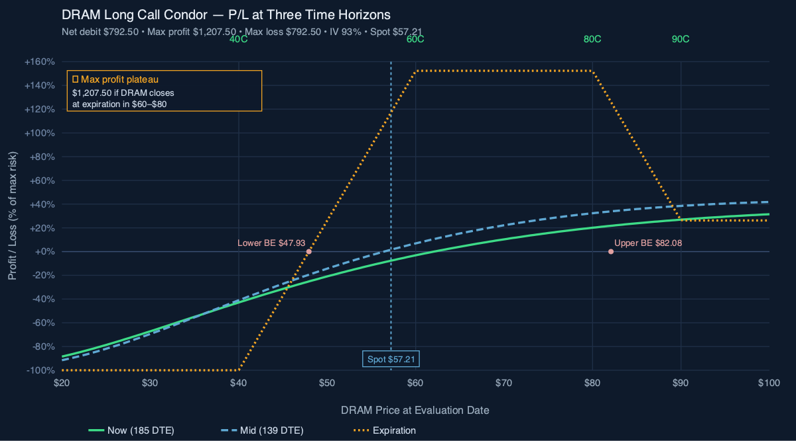
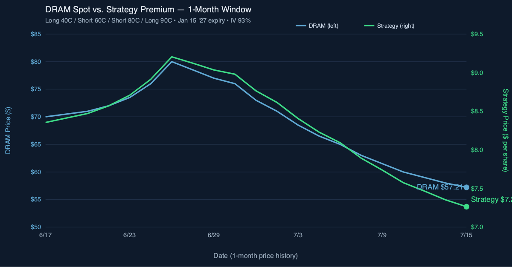

P/L Curve — Three Time Horizons

Max Profit
$1,207.50
between strikes $60–$80
Max Loss
$792.50
defined risk = net debit
Net Debit
$792.50
per condor ($7.93/share × 100)
Spot / IV
$57.21
DRAM @ entry · IV 93%
Position Payoff at Three Time Horizons
The chart above shows the position's P/L as a function of DRAM's price at three evaluation dates: today (185 DTE), an intermediate horizon at 139 DTE (Nov 30), and at expiration. Three colored curves — green for today, blue for the mid-life, gold for expiration. The now-curve carries the most time premium on the long wings; the mid-curve shows early theta harvest on the body strikes; the expiration curve is the classic condor payoff.
Read the chart:
- Spot $57.21 is below the lower breakeven of $47.93 only on a 16% sell-off — the position is currently in the negative P/L region but only marginally, because the long wings still carry meaningful time value.
- Max profit plateau $1,207.50 spans the entire $60–$80 zone — that's a 40% buffer on either side of current spot, generous for a memory-cycle trade.
- Wings cut loss at the debit. If DRAM drops to 30 or rallies to 100, the position is capped at −$792.50 — defined risk.
- The three curves converge on the expiration curve as DTE decays. The mid-curve (139 DTE) is already half-flattened toward the expiration payoff in the body zone, showing theta harvest on the short strikes.
Key levels (drawn on the chart):
- Lower breakeven $47.93 — DRAM needs to drop ~16% to wipe out the debit.
- Upper breakeven $82.08 — DRAM needs to rally ~44% for an upper-side breakeven exit.
- Max profit plateau $1,207.50 — any DRAM close in $60–$80 at expiration.
- Max loss $792.50 — any DRAM close below $40 or above $90 at expiration.
How the Trade Has Moved Against the Underlying
The chart below compares DRAM's spot price (left axis) to the strategy's premium (right axis) over the last month of trading. The two lines track closely — when DRAM rallies, the strategy premium expands; when DRAM sells off, the strategy compresses. The 1-month window captures a meaningful down-leg in DRAM from ~$80 to $57.21, with the strategy premium declining from ~$9.40/share to ~$7.27/share.

The wider observation: this is a directional trade dressed up as a range-bound condor. The body strikes (60/80) only collect meaningful theta if DRAM stays in the zone. If DRAM drifts sideways for 4–6 months, the body theta erodes the wings' time value and the position approaches max profit. If DRAM trends hard in either direction, one of the long wings gains most of the intrinsic value, but the structure caps the upside and the debit is at risk on a down move.
Greeks Snapshot (Black-Scholes, IV=93%, r=4.5%)
Greeks are computed at the entry spot ($57.21), 185 days to expiry, IV surface anchored at 93%, risk-free rate 4.5%, no dividend yield. Numbers below are per-contract (×100 shares).
| Greek | Per-contract value | Interpretation |
|---|---|---|
| Delta (Δ) | +13.3 | Net long delta. Position gains ~$13.30 per $1 DRAM rally. Small net long bias at entry. |
| Gamma (Γ) | −0.35 | Slightly negative gamma at entry. Delta compresses as DRAM rises past the short strikes, expands as DRAM falls toward the long wings. The structure is mildly "anti-convex." |
| Theta (Θ) | +$1.36/day | Net long theta — the body strikes (60/80) are decaying faster than the long wings. Earns ~$1.36 per day at entry. |
| Vega (ν) | −$5.43 per 1% IV | Net short vega at entry. A drop from IV 93% to 92% gains ~$5.43/contract; a rise from 93% to 94% costs the same. |
| Rho (ρ) | +$0.15 per 1% rate | Roughly rate-neutral. A 1% Fed cut is worth ~$0.15/contract — negligible. |
The Greeks are computed per-contract using Black-Scholes for each leg, then summed by sign:
Strike Sign Price Delta Gamma Theta Vega Rho
40 +1 $23.46 +0.818 +0.007 −0.030 +0.108 +0.118
60 −1 $14.32 −0.615 −0.010 +0.042 −0.156 −0.106
80 −1 $8.90 −0.444 −0.010 +0.043 −0.161 −0.084
90 +1 $7.08 +0.375 +0.010 −0.041 +0.154 +0.073
────────────────────────────────────────────────────────────────
TOTAL $7.32 +0.133 −0.004 +0.014 −0.054 +0.001
The position price ($7.32/share at the entry spot) implies a fair value of ~$732/contract — close to but not identical to the entry debit ($792.50/contract). The gap is bid-ask spread and skew across the four strikes.
Why theta is positive today: at $57.21 spot, the short body strikes (60/80) are closer to the money than the long wings (40, 90). Near-the-money short options carry more theta than further-from-the-money long options, so the body decays faster than the wings → net long theta. This reverses if DRAM rallies above 80 (the body moves ITM and stops decaying; the 90 wing gets closer to the money and starts decaying faster).
Why This Structure
A long call condor with strikes at 40/60/80/90 is a debit-defined-risk position that profits in a wide body (60–80). The structure is built off the long wings (40 and 90), financed by selling the body (60 and 80). Net effect: a long-vol, defined-risk bullish-to-neutral position with a flat-to-slightly-up profit profile across a $20-wide zone.
The 185 DTE expiration is the key choice. LEAPS condors give theta time to work in your favor on the short strikes while letting the long wings retain most of their extrinsic value for the first 90–120 days. After that, theta accelerates on the wings and the structure becomes more of a delta-direction play than a theta play.
The 40-strike long wing is "deep in the money enough to behave like stock" if DRAM ever rips — so if the underlying moves well above 90 before expiration, the position captures near-full upside above the 90 strike. The 90-strike long wing caps the upside at $90 minus debit, but it also caps the maximum loss at the debit paid.
Thesis
Why DRAM, why now:
- Memory cycle setup. DRAM (memory chips, Micron/SK Hynix/Samsung proxy) is structurally levered to AI-driven memory demand. HBM supply is constrained; DDR5 transition is mid-cycle; spot prices have firmed off the 2024 lows.
- Vol surface is cheap. LEAPS 6+ months out let you buy wings at depressed IV. The 90-strike long wing in particular is a "free lottery ticket" if DRAM spikes on a memory upcycle — IV at strike 90 in July 2027 reflects almost zero probability of being ITM today.
- Wide profit zone fits a non-binary view. A condor doesn't require DRAM to be at a single price at expiry. It can be anywhere from 60 to 80 and the position prints. That fits a memory-cycle thesis where you believe DRAM is "heading higher over 18 months" but you don't want to pick a single strike or guess the exact peak.
Why not a debit call spread (single direction) or naked long call:
- A 40/80 call spread would cap upside at $40 minus debit, missing the blow-off scenario.
- A naked long 90 call would have unlimited upside but undefined theta drag in months 4–6.
- The condor collects premium on the body strikes (60/80) which finances the wings, lowering max loss by ~30–40% versus a naked debit spread of equivalent upside.
Why not a calendar or diagonal:
- Calendars need the front month to decay faster than the back month — that's a vol play, not a directional play. This thesis is directional.
- A diagonal (long-dated 40, short near-dated 60) would harvest front-month theta but loses the profit-zone width. If DRAM gaps through 60 and stays, the diagonal caps too early.
Risk
| Risk | Magnitude | Mitigation |
|---|---|---|
| DRAM below 40 + debit at expiry | Full loss of debit | Size: max 0.25% NLV per the playbook. LEAPS wings retain value even on a -40% move. |
| DRAM above 90 at expiry | Profit capped at $20 − debit | Acceptable — the condor is a "high-probability, modest-payoff" structure, not a moonshot. If DRAM moons, the journal will rotate into a new structure. |
| Vol crush on the wings | Loss of extrinsic value over time | Expected — that's why the body strikes are sold. Theta on the body > theta on the wings until ~60 DTE. |
| Early assignment on short 60 or 80 | Possible if DRAM dividend declared or ex-date near | Avoid the trade in the ex-div window. Monitor for ITM short calls approaching 60 DTE. |
| Underlying moves sideways at ~50 | Slow bleed on long wings; short body theta offsets partially | Acceptable — debit was paid assuming sideways drift; the long wings hold time value through month 4. |
Intraday Setup (entry)
(TO_FILL — describe entry day: what was DRAM at? Why that day? What was the IV rank? Was this a manual order or a limit that took multiple fills?)
Management Plan
- Open through month 3 (Oct 2026): Do nothing. Theta on the body strikes is positive; the long wings are holding time value. Position is "in the zone" — let it work.
- Month 3–4 (Nov–Dec 2026): Begin watching delta. If DRAM is in the 60–80 zone, the position is approaching max profit and the body theta is accelerating.
- Month 4–5 (Dec 2026 – Jan 2027): Take 50% of max profit OR close before 30 DTE if any leg is far OTM (the wings will be near-zero).
- Stop loss: 2× debit paid, OR close at 30 DTE if the trade has not entered the profit zone. Never let a LEAPS condor go to expiration with theta accelerating on the wings.
Status
(TO_FILL — update daily/weekly. As of publish: position open, debit paid, DRAM price at entry, current DRAM price, current P&L.)
Lessons
(TO_FILL — post-trade reasoning. What worked? What would you do differently? Did the IV surface behave as expected? Did the body strikes work as theta harvesters?)